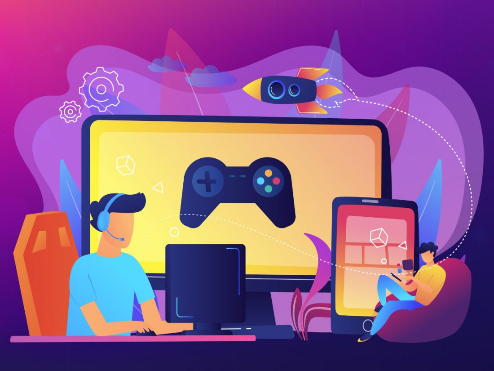

Los juegos en línea son videojuegos que necesitan una conexión a internet para poder funcionar
Permiten que personas de distintas partes del mundo jueguen juntas en una misma partida al mismo tiempo
El juego es una actividad natural en el hombre, tanto para adultos como ara niños y especialmente importante para estos últimos, que resulta fácil de reconocer y está presente a lo largo de toda la vida del ser humano. Tratar de definir con precisión qué es el juego es una tarea compleja ya que engloba una variedad de conductas que presentan notables diferencias entre sí; el juego forma parte del comportamiento humano y de la cultura de cada sociedad; para un niño es su forma principal de aprender a ejercitar destrezas y puede ser una actividad bastante seria. Es difícil de definir, se trata más bien de una orientación peculiar de la conducta que constituye una forma de asimilar e interpretar simbólicamente la realidad. El juego es pues una actividad que surge de forma natural en los niños y niñas y constituye un modo peculiar de relacionarse con el entorno; es a través del juego que descubren sus posibilidades, aprenden a conocer el mundo, interpretan la realidad, ensayan conductas sociales y asumen roles, aprenden reglas y regulan su comportamiento, exteriorizan pensamientos, descargan impulsos y emociones. Todas estas cuestiones hacen valorar el juego como un recurso didáctico con un alto valor educativo. No es simplemente una actividad de diversión para los niños y niñas, sino que es también un dinamizador de su desarrollo y un instrumento privilegiado para su aprendizaje, a la vez que determina unas acciones que les conducen a adquirir habilidades que les ayudarán a ser adultos emocionalmente equilibrados.

Dado las dificultades para definir de una forma única el concepto de juego, existen una serie de características que sí que son aceptadas y consensuadas por todos los estudios realizados en torno al juego: es una actividad placentera que fomenta y desarrolla la capacidad de disfrutar, divertirse y recrearse, proporción placer inmediato; es libre, una actividad voluntaria, espontánea y autónoma no condicionada desde el exterior; tienen un carácter universal; es una actividad que implica un fin en sí mismo; se desarrolla en una realidad ficticia; es acción e implica participación activa; no necesita un material concreto; es innato, es la actividad propia de la infancia; todo juego se desarrolla es un espacio y un tiempo; cualquier actividad puede ser convertida en juego; favorece la socialización; también tiene una función compensadora de desigualdades, integradora y rehabilitadora; el juego muestra en qué etapa evolutiva se encuentra el niño o la niña; es una vía de descubrimiento del entorno, de nuestros límites y deseaos (forma de expresión emocional); es el principal motor de desarrollo en los primeros años de vida a nivel corporal, de movimiento, de la inteligencia, las emociones, la motivación y las relaciones sociales.